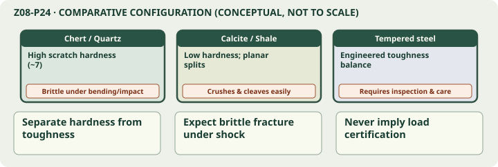

Z08-P24 · Rocks, minerals and materials · New manuscript
Mineral Hardness vs Toughness and Edge-Failure Mechanics
Distinguish scratch hardness from impact toughness so brittle high-hardness minerals are not expected to survive bending or shock loads.
When it applies · Evaluating rocks, minerals, and manufactured steel tools conceptually.
Equipment · Reference chart, hand lens.

Actions
- Distinguish hardness (resistance to scratching) from toughness (resistance to shattering under impact or bending); quartz is hard yet brittle.[R04, R05]
- Recognize that hidden micro-cracks, inclusions, and cleavage planes cause sudden catastrophic brittle failure under leverage or prying.[R04, R05, R16]
- Separate conceptual material-property comparisons from engineering ratings or permission to improvise load-bearing stone components.[R05, R16]
Failure recognition · Assuming high scratch hardness equals shock resistance leads to sudden shattering and sharp splinter injuries.[R04, R05, R06]
Verify · Material comparisons explicitly distinguish scratch hardness, impact toughness, and absence of load certification.[R04, R05]
Stop or change course · Stop applying prying, hammering, or structural loads to any brittle mineral or unverified natural stone.[R05, R06]
Evidence and editorial notes
- R04 · USGS · Collecting Rocks: Rock Classes and Mineral Property Basics (USGS GIP)
- Section: Hardness, luster, streak, and fracture vs cleavage · Conditions: Non-destructive mineral observation with simple field cues
Support: Scratch hardness, unglazed streak, luster, and fracture-versus-cleavage patterns narrow candidate mineral groups.
Limitations: Field scratch checks cannot establish chemical purity, trace heavy metals, or absence of hazardous fibers. · Conflicting evidence: Color alone is unreliable across quartz, calcite, and feldspar varieties.
Editorial note: Core Z08 mineral screening basis. · Specialist reviewer: Mineralogist
Primary source · checked 2026-11-25 - R05 · Minnesota DNR · Rocks and Minerals of Minnesota Educational Guide (Current web edition)
- Section: Chert, jasper, agate, and quartz occurrences · Conditions: Upper Midwest siliceous cobbles and sedimentary nodules
Support: Cryptocrystalline quartz varieties (chert, flint, jasper, agate) are hard silica rocks showing conchoidal fracture rather than planar cleavage.
Limitations: Visual similarity to fine-grained quartzite, basalt, or glass does not confirm thermal stability or structural suitability. · Conflicting evidence: None noted.
Editorial note: Anchors Z08 siliceous stone identification. · Specialist reviewer: Geologist and materials specialist
Primary source · checked 2026-11-25 - R06 · NIOSH / CDC · Crystalline Silica Respiratory Dust Hazards (2024)
- Section: Overview; Exposure · Conditions: Silica-bearing material disturbed by cutting, grinding, or similar dust-producing work
Support: Respirable crystalline silica exposure can cause silicosis and other disease. Avoid creating dust during field recognition.
Limitations: Hazardous particles may be invisible. Wind, casual wetting and a mask alone do not establish exposure control. · Conflicting evidence: Conditions are recorded in the A03 audit.
Editorial note: Mandatory Z08 silica/eye safety gate. · Specialist reviewer: Industrial hygienist and geologist
Primary source · checked 2026-11-25 - R16 · Minnesota DNR · Rocks and Minerals of Minnesota Educational Guide (Current web edition)
- Section: Sedimentary limestone, sandstone, and shale permeability · Conditions: Southeastern Minnesota karst, bluff, and river-valley sedimentary strata
Support: Sandstone, limestone, and shale differ sharply in cementation, porosity, and fissility, governing weathering and cliff instability.
Limitations: Karst bluffs and fractured shales shed rockfall unpredictably; visual inspection cannot certify slope or load stability. · Conflicting evidence: None noted.
Editorial note: Covers Upper Midwest sedimentary rock hazards. · Specialist reviewer: Engineering geologist
Primary source · checked 2026-11-25
Source lineage · New manuscript (Z08 P16 material selection) · Classification · New manuscript.